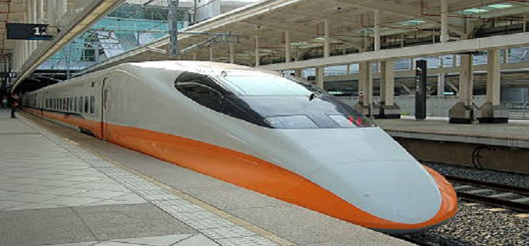

铁路
#台湾高速铁路#
最高时速可达300公里，来回穿梭于台湾西部各大都市。
客服专线：02-4066-3000
时刻表查询：http://www.thsrc.com.tw
#台湾铁路局#
环岛铁路网紧密地连系台湾各大小城市。连续假日期间欲搭乘火车最好能提前预订。
服务专线：02-2191-0096
时刻表查询：http://www.railway.gov.tw

图：台北铁路
公共巴士
长途客运巴士主要行驶于高速公路以及各大省道之间，班次密集，一般于火车站周遭都设有转运站，台北市区有2处转运站，旅客可在此换乘巴士至各大城市。
#市府转运站#
电话：02-8780-6252
地址：台北市忠孝东路5段6号
#台北转运站#
电话：02-7733-5888
地址：台北市市民大道1段209号
台北市公车路线多达300多条，另有11条假日公车行驶路线（假日行驶）及18路的小型公车路线。山区还有小型公车，一般票价为新台币15元。

图：台北转运站
计程车
台北有提供便利的出租车服务，起跳价格及里程数依台北政府规定，部分长途旅程的出租车，不适用里程表计费，所以请游客于上车前先向司机确认其计费方式。
手机付费叫车：55850（台北、基隆地区）（台北市公共运输处叫车专线）
投诉专线：0800-231035
图：台北计程车
观光巴士
台北双层观光巴士车上提供“免费WiFi”、“免费充电”及“中英日韩4种语言导览”。车上共有57个座位，包括上层37个露天座位、10个室内座位，下层9个座位、1个残障座位。
#红线#
营运时间：09：00-22：00
班距：40分钟
重要景点：台北车站、北门、西门、中正纪念堂、101、国父纪念馆、华山文创园区、松山文创园区
#蓝线#
营运时间：09：10-16：20
班距：40分钟
重要景点：台北车站、捷运西门站、信义林森路口、国宾饭店、大同公司、台北市立美术馆、捷运剑潭站、士林官邸、故宫博物院
图：观光巴士
捷运
台北有捷运系统，班车密集，但要注意为提供舒适安全的搭乘环境，捷运站内全区禁止吸烟及饮食。乘搭时可使用悠游卡、台北捷运一日票以及单程票。
台北捷运系统客服专线：02-2181-2345